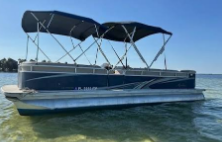

Choosing a Beach
Isle of Palms vs Folly Beach for a Bachelorette Weekend
Both beaches sit about twenty to thirty minutes from downtown Charleston, but they deliver very different weekends.
Both beaches sit about twenty to thirty minutes from downtown Charleston, but they deliver very different weekends.
Most Charleston beach bachelorettes come down to Isle of Palms or Folly Beach. Sullivan's Island and Kiawah come up too, but Sullivan's has limited rentals and Kiawah is far from downtown. If your group wants a beach house plus easy access to the city, these two are the real contenders.
Isle of Palms has the larger, newer homes, the resort option at Wild Dunes, and a wide beach that rarely feels packed outside holiday weekends. It is the stronger choice for groups who want a big rental with a pool, a resort-style day, and a calmer pace. The marina makes boat days simple, and Sullivan's Island restaurants are five minutes away. The trade-off is nightlife: the Front Beach strip has a few lively bars like The Windjammer, but most nights end at the house.

Folly has a surf-town feel, older beach cottages, and Center Street, a compact strip of bars and restaurants you can walk at night. Spots like Rita's Seaside Grille sit right by the Folly Beach Pier. Groups who want to bar-hop without rides lean Folly. The rentals tend to be smaller and closer together, so very large groups sometimes split across two houses.

Neither beach allows drinking on the sand. Isle of Palms, Folly Beach and Sullivan's Island all ban alcohol on the beach, and local news outlets like CHS Today keep a beach-by-beach rundown. Plan cocktails at the rental on either island.
Both islands are roughly a twenty-five to thirty-five minute drive to King Street depending on traffic. Isle of Palms connects through Mount Pleasant, which puts Costco, Publix and Shem Creek on the way in, handy for stocking the house. Folly connects through James Island. On Isle of Palms, golf carts and LSVs cover most island trips; on Folly, walking and bikes handle a lot of it.
Pick Isle of Palms if the priorities are a big house with a pool, a boat day, a resort-style beach and a private night in. Pick Folly if the group wants to walk to bars every night and does not mind a smaller, more casual rental. If Isle of Palms is your choice, the full Isle of Palms bachelorette party guide covers rentals, restaurants, activities and a sample Thursday through Sunday itinerary.